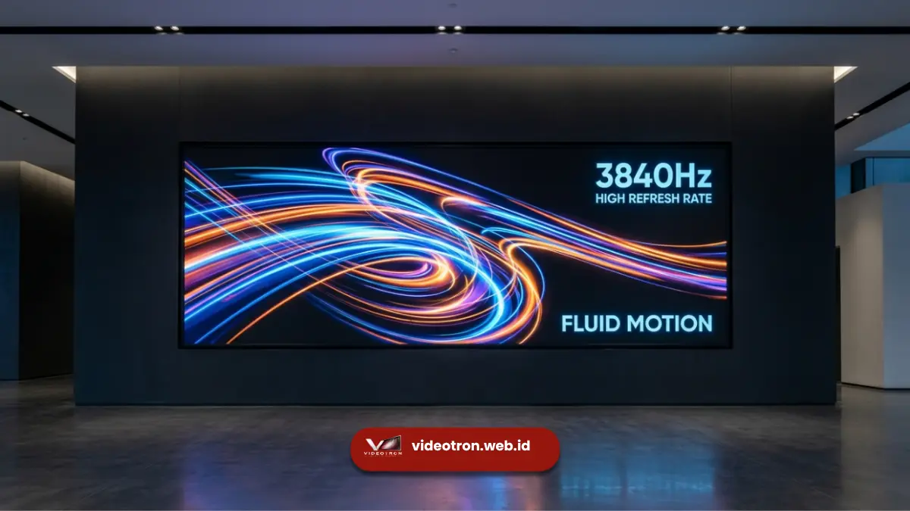

Refresh rate videotron adalah kecepatan layar LED memperbarui gambar dalam satu detik, diukur dalam satuan Hertz (Hz).
Videotron dengan refresh rate tinggi seperti 3840Hz menghasilkan tampilan lebih stabil, minim flicker, dan lebih nyaman dilihat kamera maupun mata manusia secara langsung.
Poin Penting:
- Refresh rate menentukan seberapa sering gambar pada layar LED diperbarui setiap detik
- Refresh rate tinggi mengurangi risiko flicker atau kedipan yang tidak terlihat mata namun terekam kamera
- Standar 3840Hz umumnya dianggap sudah memadai untuk kebutuhan broadcast dan dokumentasi profesional
- Refresh rate rendah dapat menyebabkan garis-garis (banding) muncul di hasil rekaman video
- Pemilihan refresh rate perlu disesuaikan dengan kebutuhan acara, terutama jika melibatkan produksi video atau siaran langsung
- 1. Apa Itu Refresh Rate pada Videotron?
- 2. Kenapa Refresh Rate 3840Hz Dianggap Penting?
- 3. Apa Dampak Refresh Rate Rendah pada Hasil Rekaman?
- 4. Bagaimana Refresh Rate Berkaitan dengan Kebutuhan Acara?
- 5. Apa Saja Kesalahan Umum Terkait Refresh Rate Videotron?
- 6. Tips Memastikan Kualitas Refresh Rate Videotron Sesuai Kebutuhan
- 7. Kesimpulan serta Rekomendasi
Apa Itu Refresh Rate pada Videotron?
Refresh rate adalah frekuensi layar LED memperbarui tampilan gambarnya dalam satu detik.
Semakin tinggi angka Hz, semakin sering panel LED menyalakan ulang piksel-pikselnya dalam rentang waktu yang sama.
Pada videotron, refresh rate bekerja bersamaan dengan sistem driver IC yang mengatur kapan setiap titik LED menyala dan mati.
Proses ini terjadi sangat cepat sehingga mata manusia umumnya tidak dapat mendeteksi kedipan tersebut secara langsung.Namun, kondisi berbeda dapat terjadi ketika layar direkam menggunakan kamera.
Refresh rate videotron biasanya dinyatakan dalam satuan Hz, misalnya 1920Hz, 2400Hz, 3072Hz, hingga 3840Hz atau lebih tinggi.
Semakin tinggi nilai Hz, semakin halus dan stabil gambar yang dihasilkan, khususnya saat direkam dengan kecepatan shutter kamera tertentu.
Kenapa Refresh Rate 3840Hz Dianggap Penting?
Refresh rate 3840Hz penting karena mampu meminimalkan gangguan flicker saat videotron direkam kamera dengan berbagai pengaturan shutter speed, sehingga hasil dokumentasi tetap terlihat bersih dan profesional.
Kamera bekerja dengan cara menangkap gambar dalam interval waktu tertentu, berbeda dengan mata manusia yang menangkap cahaya secara kontinu.
Ketika refresh rate videotron terlalu rendah dibandingkan kecepatan rana kamera, hasil rekaman dapat menampilkan garis-garis horizontal bergerak atau kedipan yang mengganggu, meskipun secara kasat mata layar terlihat normal.
Beberapa alasan refresh rate tinggi menjadi pertimbangan penting:
- Produksi video dan siaran langsung membutuhkan tampilan bebas flicker agar hasil akhir terlihat profesional
- Fotografi event menggunakan videotron sebagai latar membutuhkan refresh rate tinggi agar tidak muncul garis pada foto
- Semakin tinggi refresh rate, semakin fleksibel kompatibilitasnya terhadap berbagai jenis kamera dan pengaturan shutter speed
- Acara berskala besar seperti konser, konferensi pers, dan siaran televisi umumnya mensyaratkan refresh rate tinggi sebagai standar teknis
Apa Dampak Refresh Rate Rendah pada Hasil Rekaman?
Refresh rate rendah dapat menyebabkan munculnya garis-garis horizontal bergerak (rolling bar) atau flicker pada hasil rekaman video maupun foto, meskipun tampilan langsung di lokasi terlihat normal bagi mata manusia.
Fenomena ini terjadi karena ketidaksesuaian antara siklus refresh layar dan kecepatan penangkapan gambar kamera.
Videotron dengan refresh rate rendah, misalnya di bawah 1920Hz, cenderung lebih rentan terhadap masalah ini terutama saat digunakan pada acara yang banyak melibatkan dokumentasi visual.
Dampak lain dari refresh rate rendah meliputi:
- Hasil rekaman video terlihat berkedip atau memiliki garis yang bergerak turun secara berulang
- Foto yang diambil dengan shutter speed tinggi berisiko menampilkan sebagian layar videotron kosong atau bergaris
- Pengalaman menonton siaran ulang menjadi kurang nyaman dibandingkan menyaksikan langsung di lokasi
- Tim produksi perlu melakukan penyesuaian tambahan pada pengaturan kamera untuk mengurangi efek tersebut

Bagaimana Refresh Rate Berkaitan dengan Kebutuhan Acara?
Kebutuhan refresh rate videotron berbeda-beda tergantung jenis acara, terutama apakah acara tersebut melibatkan dokumentasi kamera profesional, siaran langsung, atau hanya tayangan visual biasa tanpa perekaman intensif.
Untuk acara seperti pameran produk, backdrop panggung, atau digital signage yang jarang direkam kamera profesional, refresh rate standar biasanya sudah mencukupi.
Namun untuk acara seperti konser musik dengan dokumentasi multi-kamera, konferensi pers yang disiarkan televisi, atau produksi video komersial, refresh rate tinggi seperti 3840Hz menjadi pertimbangan yang lebih relevan.
Beberapa faktor yang perlu dipertimbangkan dalam menentukan kebutuhan refresh rate:
- Apakah acara akan didokumentasikan menggunakan kamera profesional atau kamera ponsel
- Apakah hasil dokumentasi akan digunakan untuk siaran langsung atau hanya arsip internal
- Seberapa penting kualitas visual pada hasil akhir foto dan video acara
- Anggaran yang tersedia, karena videotron dengan refresh rate lebih tinggi umumnya memiliki spesifikasi teknis lebih lengkap
Apa Saja Kesalahan Umum Terkait Refresh Rate Videotron?
Kesalahan umum yang sering terjadi adalah mengabaikan spesifikasi refresh rate saat menyewa atau membeli videotron, sehingga hasil dokumentasi acara justru mengalami masalah flicker yang baru disadari setelah acara berlangsung.
Beberapa kesalahan lain yang kerap ditemukan:
- Hanya berfokus pada ukuran dan kecerahan layar tanpa menanyakan spesifikasi refresh rate kepada vendor
- Mengasumsikan semua videotron memiliki refresh rate yang sama padahal spesifikasi ini bervariasi antar produk
- Tidak melakukan uji coba pengambilan gambar sebelum acara berlangsung, terutama untuk acara penting
- Mengabaikan koordinasi antara tim produksi videotron dan tim dokumentasi mengenai pengaturan kamera yang sesuai
Tips Memastikan Kualitas Refresh Rate Videotron Sesuai Kebutuhan
Sebelum menggunakan videotron untuk acara yang melibatkan dokumentasi visual, penting untuk memastikan spesifikasi refresh rate sesuai dengan kebutuhan agar hasil akhir tetap terlihat profesional dan bebas gangguan visual.
Beberapa langkah yang dapat dilakukan:
- Tanyakan secara spesifik angka refresh rate (dalam Hz) kepada penyedia videotron, bukan hanya spesifikasi umum
- Diskusikan kebutuhan dokumentasi acara sejak awal agar vendor dapat merekomendasikan panel yang sesuai
- Lakukan uji rekam singkat sebelum acara dimulai jika memungkinkan, terutama untuk acara berskala besar
- Sesuaikan pengaturan shutter speed kamera dengan karakteristik refresh rate videotron yang digunakan
Kesimpulan serta Rekomendasi
Refresh rate videotron menjadi salah satu spesifikasi teknis yang penting untuk diperhatikan, terutama bagi acara yang melibatkan dokumentasi visual profesional.
Refresh rate tinggi seperti 3840Hz umumnya memberikan hasil tampilan lebih stabil dan minim flicker saat direkam kamera, sehingga lebih sesuai untuk kebutuhan siaran langsung, produksi video, maupun fotografi event berskala besar.
Sebelum menentukan videotron untuk kebutuhan acara Anda, pastikan menanyakan spesifikasi refresh rate secara detail kepada penyedia layanan agar hasil dokumentasi acara tetap maksimal dan bebas dari gangguan visual yang tidak diinginkan.
Butuh videotron dengan refresh rate tinggi untuk acara Anda? Konsultasikan kebutuhan teknis videotron Anda bersama tim kami agar mendapatkan spesifikasi yang tepat sesuai jenis dan skala acara.

Hawa Nadira
LED Technology Consultant dan Visual Educator
Konsultan dan spesialis solusi display digital berdedikasi tinggi yang fokus membagikan panduan edukatif mengenai penerapan teknologi layar LED videotron untuk kebutuhan interior modern di Indonesia.